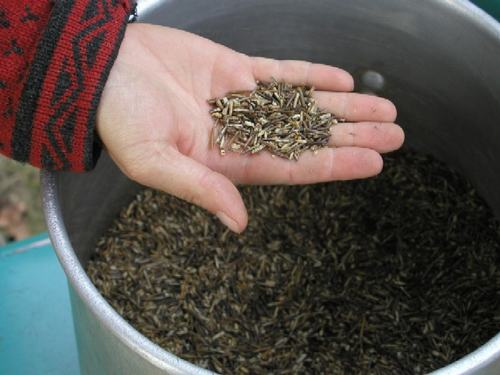

Keep it wild! Protect Wild Rice From Genetic Engineering
Gego Aanjitooken Manoomin
Don't Change The Wild Rice
Gego Aanjitooken Manoomin
Don't Change The Wild Rice
Don't Change The Wild Rice

Manoomin, or wild rice, is a sacred food to the Anishinaabeg, and a key part of the ecosystem of the Northern Minnesota Lakes region. Over the past decades, plant breeders have developed wild rice for paddies in Minnesota, and today most of the wild rice on the market comes from rice paddies, and indeed sixty-seven percent of it from California Each fall, millions of pounds of California wild rice comes into the state to be processed, some of that rice, if genetically engineered would irreversibly contaminate our manoomin. Minnesota is the center of the biodiversity of all wild rice. There are over 60,000 acres of natural wild rice growing throughout the lakes and rivers. Today, new work on wild rice threatens the genetic integrity of this plant. We need your help to stop any potential genetic contamination of wild rice. Go to our Action Page to see how you can help protect manoomin for the next seven generations.
Manoomin, or wild rice, is a sacred food to the Anishinaabeg, and a key part of the ecosystem of the Northern Minnesota Lakes region. Over the past decades, plant breeders have developed wild rice for paddies in Minnesota, and today most of the wild rice on the market comes from rice paddies, and indeed sixty-seven percent of it from California Each fall, millions of pounds of California wild rice comes into the state to be processed, some of that rice, if genetically engineered would irreversibly contaminate our manoomin. Minnesota is the center of the biodiversity of all wild rice. There are over 60,000 acres of natural wild rice growing throughout the lakes and rivers. Today, new work on wild rice threatens the genetic integrity of this plant. We need your help to stop any potential genetic contamination of wild rice. Go to our Action Page to see how you can help protect manoomin for the next seven generations.
Wild Rice Legislation heard in House Ag Committee!
in
Go to our Legislation Page to find out more. Browse articles added May 5, 2005 to "Resources and Articles" page. May 1, 2005: Minnesota Izaak Walton League Resolves to Protect Wild Rice (read it on our "Tribal and Coalition Resources" page!) Star Tribune Editorial "Wild rice/No need to mess with genome" (March 21, 2005) (read it on our "Resources and Articles" page) UPDATE: Senate Committee Hearing on Bill 1566 on Wednesday March 16, 2005 went well!